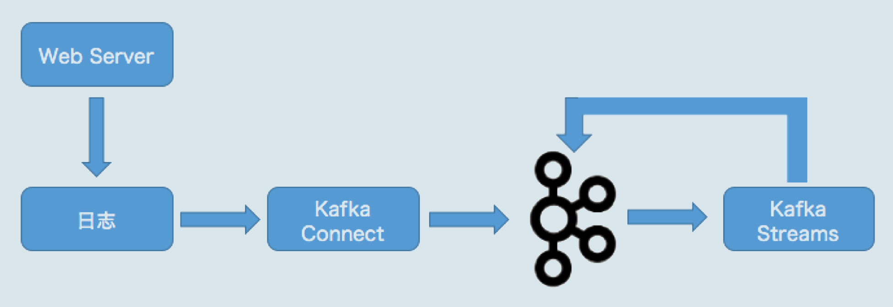
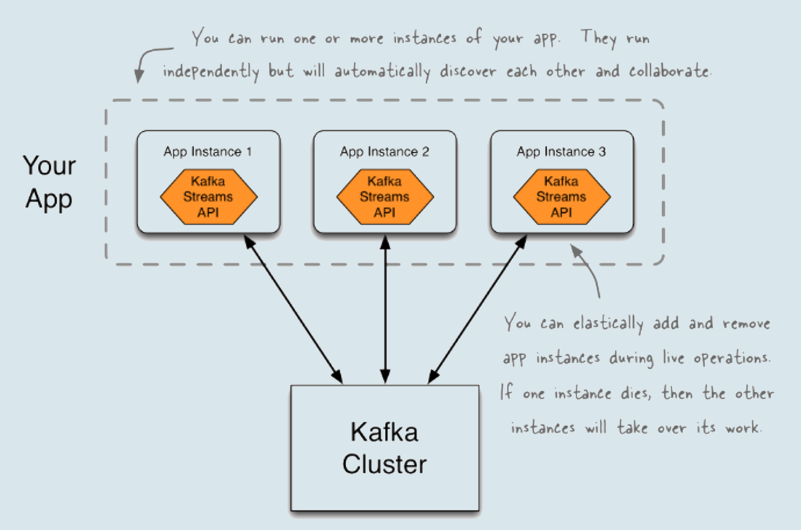
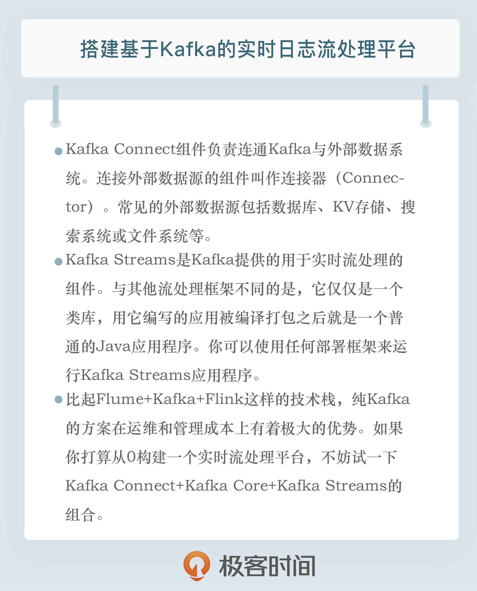

- 00 开篇词 为什么要学习Kafka？.md.html
- 01 消息引擎系统ABC.md.html
- 02 一篇文章带你快速搞定Kafka术语.md.html
- 03 Kafka只是消息引擎系统吗？.md.html
- 04 我应该选择哪种Kafka？.md.html
- 05 聊聊Kafka的版本号.md.html
- 06 Kafka线上集群部署方案怎么做？.md.html
- 07 最最最重要的集群参数配置（上）.md.html
- 08 最最最重要的集群参数配置（下）.md.html
- 09 生产者消息分区机制原理剖析.md.html
- 10 生产者压缩算法面面观.md.html
- 11 无消息丢失配置怎么实现？.md.html
- 12 客户端都有哪些不常见但是很高级的功能？.md.html
- 13 Java生产者是如何管理TCP连接的？.md.html
- 14 幂等生产者和事务生产者是一回事吗？.md.html
- 15 消费者组到底是什么？.md.html
- 16 揭开神秘的“位移主题”面纱.md.html
- 17 消费者组重平衡能避免吗？.md.html
- 18 Kafka中位移提交那些事儿.md.html
- 19 CommitFailedException异常怎么处理？.md.html
- 20 多线程开发消费者实例.md.html
- 21 Java 消费者是如何管理TCP连接的.md.html
- 22 消费者组消费进度监控都怎么实现？.md.html
- 23 Kafka副本机制详解.md.html
- 24 请求是怎么被处理的？.md.html
- 25 消费者组重平衡全流程解析.md.html
- 26 你一定不能错过的Kafka控制器.md.html
- 27 关于高水位和Leader Epoch的讨论.md.html
- 28 主题管理知多少.md.html
- 29 Kafka动态配置了解下？.md.html
- 30 怎么重设消费者组位移？.md.html
- 31 常见工具脚本大汇总.md.html
- 32 KafkaAdminClient：Kafka的运维利器.md.html
- 33 Kafka认证机制用哪家？.md.html
- 34 云环境下的授权该怎么做？.md.html
- 35 跨集群备份解决方案MirrorMaker.md.html
- 36 你应该怎么监控Kafka？.md.html
- 37 主流的Kafka监控框架.md.html
- 38 调优Kafka，你做到了吗？.md.html
- 39 从0搭建基于Kafka的企业级实时日志流处理平台.md.html
- 40 Kafka Streams与其他流处理平台的差异在哪里？.md.html
- 41 Kafka Streams DSL开发实例.md.html
- 42 Kafka Streams在金融领域的应用.md.html
- 加餐 搭建开发环境、阅读源码方法、经典学习资料大揭秘.md.html
- 结束语 以梦为马，莫负韶华！.md.html
39 从0搭建基于Kafka的企业级实时日志流处理平台
你好，我是胡夕。今天我要和你分享的主题是：从 0 搭建基于 Kafka 的企业级实时日志流处理平台。
简单来说，我们要实现一些大数据组件的组合，就如同玩乐高玩具一样，把它们“插”在一起，“拼”成一个更大一点的玩具。
在任何一个企业中，服务器每天都会产生很多的日志数据。这些数据内容非常丰富，包含了我们的线上业务数据、用户行为数据以及后端系统数据。实时分析这些数据，能够帮助我们更快地洞察潜在的趋势，从而有针对性地做出决策。今天，我们就使用 Kafka 搭建一个这样的平台。
流处理架构
如果在网上搜索实时日志流处理，你应该能够搜到很多教你搭建实时流处理平台做日志分析的教程。这些教程使用的技术栈大多是 Flume+Kafka+Storm、Spark Streaming 或 Flink。特别是 Flume+Kafka+Flink 的组合，逐渐成为了实时日志流处理的标配。不过，要搭建这样的处理平台，你需要用到 3 个框架才能实现，这既增加了系统复杂度，也提高了运维成本。
今天，我来演示一下如何使用 Apache Kafka 这一个框架，实现一套实时日志流处理系统。换句话说，我使用的技术栈是 Kafka Connect+Kafka Core+Kafka Streams 的组合。
下面这张图展示了基于 Kafka 的实时日志流处理平台的流程。

从图中我们可以看到，日志先从 Web 服务器被不断地生产出来，随后被实时送入到 Kafka Connect 组件，Kafka Connect 组件对日志进行处理后，将其灌入 Kafka 的某个主题上，接着发送到 Kafka Streams 组件，进行实时分析。最后，Kafka Streams 将分析结果发送到 Kafka 的另一个主题上。
我在专栏前面简单介绍过 Kafka Connect 和 Kafka Streams 组件，前者可以实现外部系统与 Kafka 之间的数据交互，而后者可以实时处理 Kafka 主题中的消息。
现在，我们就使用这两个组件，结合前面学习的所有 Kafka 知识，一起构建一个实时日志分析平台。
Kafka Connect 组件
我们先利用 Kafka Connect 组件收集数据。如前所述，Kafka Connect 组件负责连通 Kafka 与外部数据系统。连接外部数据源的组件叫连接器（Connector）。常见的外部数据源包括数据库、KV 存储、搜索系统或文件系统等。
今天我们使用文件连接器（File Connector）实时读取 Nginx 的 access 日志。假设 access 日志的格式如下：
10.10.13.41 - - [13/Aug/2019:03:46:54 +0800] "GET /v1/open/product_list?user_key=****&user_phone=****&screen_height=1125&screen_width=2436&from_page=1&user_type=2&os_type=ios HTTP/1.0" 200 1321
在这段日志里，请求参数中的 os_type 字段目前有两个值：ios 和 android。我们的目标是实时计算当天所有请求中 ios 端和 android 端的请求数。
启动 Kafka Connect
当前，Kafka Connect 支持单机版（Standalone）和集群版（Cluster），我们用集群的方式来启动 Connect 组件。
首先，我们要启动 Kafka 集群，假设 Broker 的连接地址是 localhost:9092。
启动好 Kafka 集群后，我们启动 Connect 组件。在 Kafka 安装目录下有个 config/connect-distributed.properties 文件，你需要修改下列项：
bootstrap.servers=localhost:9092
rest.host.name=localhost
rest.port=8083
第 1 项是指定要连接的 Kafka 集群，第 2 项和第 3 项分别指定 Connect 组件开放的 REST 服务的主机名和端口。保存这些变更之后，我们运行下面的命令启动 Connect。
cd kafka_2.12-2.3.0
bin/connect-distributed.sh config/connect-distributed.properties
如果一切正常，此时 Connect 应该就成功启动了。现在我们在浏览器访问 localhost:8083 的 Connect REST 服务，应该能看到下面的返回内容：
{"version":"2.3.0","commit":"fc1aaa116b661c8a","kafka_cluster_id":"XbADW3mnTUuQZtJKn9P-hA"}
添加 File Connector
看到该 JSON 串，就表明 Connect 已经成功启动了。此时，我们打开一个终端，运行下面这条命令来查看一下当前都有哪些 Connector。
$ curl http://localhost:8083/connectors
[]
结果显示，目前我们没有创建任何 Connector。
现在，我们来创建对应的 File Connector。该 Connector 读取指定的文件，并为每一行文本创建一条消息，并发送到特定的 Kafka 主题上。创建命令如下：
$ curl -H "Content-Type:application/json" -H "Accept:application/json" http://localhost:8083/connectors -X POST --data '{"name":"file-connector","config":{"connector.class":"org.apache.kafka.connect.file.FileStreamSourceConnector","file":"/var/log/access.log","tasks.max":"1","topic":"access_log"}}'
{"name":"file-connector","config":{"connector.class":"org.apache.kafka.connect.file.FileStreamSourceConnector","file":"/var/log/access.log","tasks.max":"1","topic":"access_log","name":"file-connector"},"tasks":[],"type":"source"}
这条命令本质上是向 Connect REST 服务发送了一个 POST 请求，去创建对应的 Connector。在这个例子中，我们的 Connector 类是 Kafka 默认提供的FileStreamSourceConnector。我们要读取的日志文件在 /var/log 目录下，要发送到 Kafka 的主题名称为 access_log。
现在，我们再次运行 curl http: // localhost:8083/connectors， 验证一下刚才的 Connector 是否创建成功了。
$ curl http://localhost:8083/connectors
["file-connector"]
显然，名为 file-connector 的新 Connector 已经创建成功了。如果我们现在使用 Console Consumer 程序去读取 access_log 主题的话，应该会发现 access.log 中的日志行数据已经源源不断地向该主题发送了。
如果你的生产环境中有多台机器，操作也很简单，在每台机器上都创建这样一个 Connector，只要保证它们被送入到相同的 Kafka 主题以供消费就行了。
Kafka Streams 组件
数据到达 Kafka 还不够，我们还需要对其进行实时处理。下面我演示一下如何编写 Kafka Streams 程序来实时分析 Kafka 主题数据。
我们知道，Kafka Streams 是 Kafka 提供的用于实时流处理的组件。
与其他流处理框架不同的是，它仅仅是一个类库，用它编写的应用被编译打包之后就是一个普通的 Java 应用程序。你可以使用任何部署框架来运行 Kafka Streams 应用程序。
同时，你只需要简单地启动多个应用程序实例，就能自动地获得负载均衡和故障转移，因此，和 Spark Streaming 或 Flink 这样的框架相比，Kafka Streams 自然有它的优势。
下面这张来自 Kafka 官网的图片，形象地展示了多个 Kafka Streams 应用程序组合在一起，共同实现流处理的场景。图中清晰地展示了 3 个 Kafka Streams 应用程序实例。一方面，它们形成一个组，共同参与并执行流处理逻辑的计算；另一方面，它们又都是独立的实体，彼此之间毫无关联，完全依靠 Kafka Streams 帮助它们发现彼此并进行协作。

关于 Kafka Streams 的原理，我会在专栏后面进行详细介绍。今天，我们只要能够学会利用它提供的 API 编写流处理应用，帮我们找到刚刚提到的请求日志中 ios 端和 android 端发送请求数量的占比数据就行了。
编写流处理应用
要使用 Kafka Streams，你需要在你的 Java 项目中显式地添加 kafka-streams 依赖。我以最新的 2.3 版本为例，分别演示下 Maven 和 Gradle 的配置方法。
Maven:
<dependency>
<groupId>org.apache.kafka</groupId>
<artifactId>kafka-streams</artifactId>
<version>2.3.0</version>
</dependency>
Gradle:
compile group: 'org.apache.kafka', name: 'kafka-streams', version: '2.3.0'
现在，我先给出完整的代码，然后我会详细解释一下代码中关键部分的含义。
package com.geekbang.kafkalearn;
import com.google.gson.Gson;
import org.apache.kafka.common.serialization.Serdes;
import org.apache.kafka.streams.KafkaStreams;
import org.apache.kafka.streams.StreamsBuilder;
import org.apache.kafka.streams.StreamsConfig;
import org.apache.kafka.streams.Topology;
import org.apache.kafka.streams.kstream.KStream;
import org.apache.kafka.streams.kstream.Produced;
import org.apache.kafka.streams.kstream.TimeWindows;
import org.apache.kafka.streams.kstream.WindowedSerdes;
import java.time.Duration;
import java.util.Properties;
import java.util.concurrent.CountDownLatch;
public class OSCheckStreaming {
public static void main(String[] args) {
Properties props = new Properties();
props.put(StreamsConfig.APPLICATION_ID_CONFIG, "os-check-streams");
props.put(StreamsConfig.BOOTSTRAP_SERVERS_CONFIG, "localhost:9092");
props.put(StreamsConfig.DEFAULT_KEY_SERDE_CLASS_CONFIG, Serdes.String().getClass());
props.put(StreamsConfig.DEFAULT_VALUE_SERDE_CLASS_CONFIG, Serdes.String().getClass());
props.put(StreamsConfig.DEFAULT_WINDOWED_KEY_SERDE_INNER_CLASS, Serdes.StringSerde.class.getName());
final Gson gson = new Gson();
final StreamsBuilder builder = new StreamsBuilder();
KStream<String, String> source = builder.stream("access_log");
source.mapValues(value -> gson.fromJson(value, LogLine.class)).mapValues(LogLine::getPayload)
.groupBy((key, value) -> value.contains("ios") ? "ios" : "android")
.windowedBy(TimeWindows.of(Duration.ofSeconds(2L)))
.count()
.toStream()
.to("os-check", Produced.with(WindowedSerdes.timeWindowedSerdeFrom(String.class), Serdes.Long()));
final Topology topology = builder.build();
final KafkaStreams streams = new KafkaStreams(topology, props);
final CountDownLatch latch = new CountDownLatch(1);
Runtime.getRuntime().addShutdownHook(new Thread("streams-shutdown-hook") {
@Override
public void run() {
streams.close();
latch.countDown();
}
});
try {
streams.start();
latch.await();
} catch (Exception e) {
System.exit(1);
}
System.exit(0);
}
}
class LogLine {
private String payload;
private Object schema;
public String getPayload() {
return payload;
}
}
这段代码会实时读取 access_log 主题，每 2 秒计算一次 ios 端和 android 端请求的总数，并把这些数据写入到 os-check 主题中。
首先，我们构造一个 Properties 对象。这个对象负责初始化 Streams 应用程序所需要的关键参数设置。比如，在上面的例子中，我们设置了 bootstrap.servers 参数、application.id 参数以及默认的序列化器（Serializer）和解序列化器（Deserializer）。
bootstrap.servers 参数你应该已经很熟悉了，我就不多讲了。这里的 application.id 是 Streams 程序中非常关键的参数，你必须要指定一个集群范围内唯一的字符串来标识你的 Kafka Streams 程序。序列化器和解序列化器设置了默认情况下 Streams 程序执行序列化和反序列化时用到的类。在这个例子中，我们设置的是 String 类型，这表示，序列化时会将 String 转换成字节数组，反序列化时会将字节数组转换成 String。
构建好 Properties 实例之后，下一步是创建 StreamsBuilder 对象。稍后我们会用这个 Builder 去实现具体的流处理逻辑。
在这个例子中，我们实现了这样的流计算逻辑：每 2 秒去计算一下 ios 端和 android 端各自发送的总请求数。还记得我们的原始数据长什么样子吗？它是一行 Nginx 日志，只不过 Connect 组件在读取它后，会把它包装成 JSON 格式发送到 Kafka，因此，我们需要借助 Gson 来帮助我们把 JSON 串还原为 Java 对象，这就是我在代码中创建 LogLine 类的原因。
代码中的 mapValues 调用将接收到的 JSON 串转换成 LogLine 对象，之后再次调用 mapValues 方法，提取出 LogLine 对象中的 payload 字段，这个字段保存了真正的日志数据。这样，经过两次 mapValues 方法调用之后，我们成功地将原始数据转换成了实际的 Nginx 日志行数据。
值得注意的是，代码使用的是 Kafka Streams 提供的 mapValues 方法。顾名思义，这个方法就是只对消息体（Value）进行转换，而不变更消息的键（Key）。
其实，Kafka Streams 也提供了 map 方法，允许你同时修改消息 Key。通常来说，我们认为mapValues 要比 map 方法更高效，因为 Key 的变更可能导致下游处理算子（Operator）的重分区，降低性能。如果可能的话最好尽量使用 mapValues 方法。
拿到真实日志行数据之后，我们调用 groupBy 方法进行统计计数。由于我们要统计双端（ios 端和 android 端）的请求数，因此，我们 groupBy 的 Key 是 ios 或 android。在上面的那段代码中，我仅仅依靠日志行中是否包含特定关键字的方式来确定是哪一端。更正宗的做法应该是，分析 Nginx 日志格式，提取对应的参数值，也就是 os_type 的值。
做完 groupBy 之后，我们还需要限定要统计的时间窗口范围，即我们统计的双端请求数是在哪个时间窗口内计算的。在这个例子中，我调用了windowedBy 方法，要求 Kafka Streams 每 2 秒统计一次双端的请求数。设定好了时间窗口之后，下面就是调用count 方法进行统计计数了。
这一切都做完了之后，我们需要调用toStream 方法将刚才统计出来的表（Table）转换成事件流，这样我们就能实时观测它里面的内容。我会在专栏的最后几讲中解释下流处理领域内的流和表的概念以及它们的区别。这里你只需要知道 toStream 是将一个 Table 变成一个 Stream 即可。
最后，我们调用to 方法将这些时间窗口统计数据不断地写入到名为 os-check 的 Kafka 主题中，从而最终实现我们对 Nginx 日志进行实时分析处理的需求。
启动流处理应用
由于 Kafka Streams 应用程序就是普通的 Java 应用，你可以用你熟悉的方式对它进行编译、打包和部署。本例中的 OSCheckStreaming.java 就是一个可执行的 Java 类，因此直接运行它即可。如果一切正常，它会将统计数据源源不断地写入到 os-check 主题。
查看统计结果
如果我们想要查看统计的结果，一个简单的方法是使用 Kafka 自带的 kafka-console-consumer 脚本。命令如下：
$ bin/kafka-console-consumer.sh --bootstrap-server localhost:9092 --topic os-check --from-beginning --property value.deserializer=org.apache.kafka.common.serialization.LongDeserializer --property print.key=true --property key.deserializer=org.apache.kafka.streams.kstream.TimeWindowedDeserializer --property key.deserializer.default.windowed.key.serde.inner=org.apache.kafka.common.serialization.Serdes\$StringSerde
[[email protected]/9223372036854775807] 1522
[[email protected]/9223372036854775807] 478
[[email protected]/9223372036854775807] 1912
[[email protected]/9223372036854775807] 5313
[[email protected]/9223372036854775807] 780
[[email protected]/9223372036854775807] 1949
[[email protected]/9223372036854775807] 37
……
由于我们统计的结果是某个时间窗口范围内的，因此承载这个统计结果的消息的 Key 封装了该时间窗口信息，具体格式是：[ios 或 [email protected]开始时间 / 结束时间]，而消息的 Value 就是一个简单的数字，表示这个时间窗口内的总请求数。
如果把上面 ios 相邻输出行中的开始时间相减，我们就会发现，它们的确是每 2 秒输出一次，每次输出会同时计算出 ios 端和 android 端的总请求数。接下来，你可以订阅这个 Kafka 主题，将结果实时导出到你期望的其他数据存储上。
小结
至此，基于 Apache Kafka 的实时日志流处理平台就简单搭建完成了。在搭建的过程中，我们只使用 Kafka 这一个大数据框架就完成了所有组件的安装、配置和代码开发。比起 Flume+Kafka+Flink 这样的技术栈，纯 Kafka 的方案在运维和管理成本上有着极大的优势。如果你打算从 0 构建一个实时流处理平台，不妨试一下 Kafka Connect+Kafka Core+Kafka Streams 的组合。
其实，Kafka Streams 提供的功能远不止做计数这么简单。今天，我只是为你展示了 Kafka Streams 的冰山一角。在专栏的后几讲中，我会重点向你介绍 Kafka Streams 组件的使用和管理，敬请期待。
